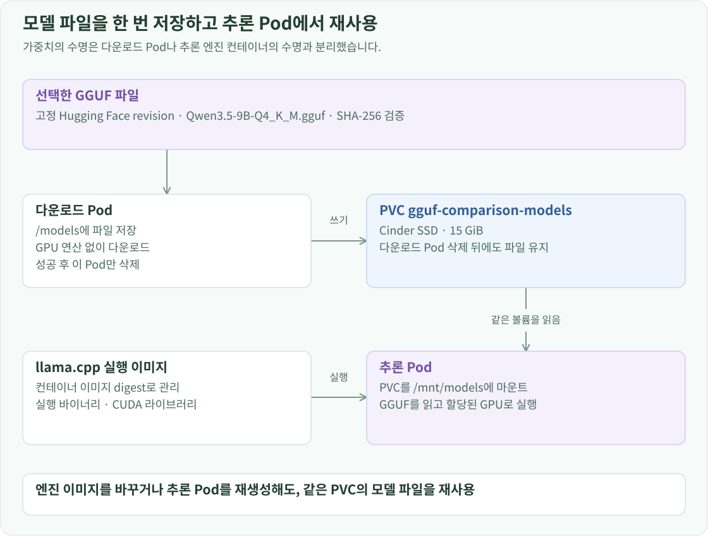

구축 개요
모델 서버가 실행되려면 GPU와 모델 파일이 모두 필요합니다. GPU는 DRA로 할당하고, 가중치는 Cinder PVC에 저장합니다. 다운로드용 Pod가 파일을 한 번 기록하면 추론 Pod는 같은 볼륨을 /mnt/models에 연결해 읽습니다.
파일과 저장 위치
현재 파일은 unsloth/Qwen3.5-9B-GGUF의 Qwen3.5-9B-Q4_K_M.gguf입니다. 다운로드 주소에 revision을 고정해 같은 이름의 파일이 변경되어도 배포 입력이 바뀌지 않게 합니다.

- revision:
3885219b6810b007914f3a7950a8d1b469d598a5 - SHA-256:
03b74727a860a56338e042c4420bb3f04b2fec5734175f4cb9fa853daf52b7e8 - PVC:
llm-d/gguf-comparison-models,cinder-ssd, 15 GiB
다운로드 Pod
llm-d Namespace와 cinder-ssd StorageClass를 준비한 뒤 아래 선언을 적용합니다. PVC의 WaitForFirstConsumer 정책에 따라 다운로드 Pod가 배치될 때 볼륨도 연결됩니다. 추론 Pod와 같은 gpu-worker-01에서 다운로드하지만, 이 작업은 GPU를 요청하지 않습니다.
apiVersion: v1
kind: PersistentVolumeClaim
metadata:
name: gguf-comparison-models
namespace: llm-d
spec:
accessModes: [ReadWriteOnce]
storageClassName: cinder-ssd
resources:
requests:
storage: 15Gi
---
apiVersion: v1
kind: Pod
metadata:
name: gguf-model-download
namespace: llm-d
spec:
restartPolicy: Never
nodeSelector:
kubernetes.io/hostname: gpu-worker-01
securityContext:
runAsUser: 1000
runAsGroup: 1000
fsGroup: 1000
containers:
- name: download
image: curlimages/curl:8.12.1
command: [sh, -c]
args:
- >-
curl -fL --retry 3 -o /models/Qwen3.5-9B-Q4_K_M.gguf
https://huggingface.co/unsloth/Qwen3.5-9B-GGUF/resolve/3885219b6810b007914f3a7950a8d1b469d598a5/Qwen3.5-9B-Q4_K_M.gguf
&& sha256sum /models/Qwen3.5-9B-Q4_K_M.gguf
resources:
requests:
cpu: 50m
memory: 64Mi
limits:
memory: 256Mi
volumeMounts:
- name: models
mountPath: /models
volumes:
- name: models
persistentVolumeClaim:
claimName: gguf-comparison-models
curl이 성공하면 파일의 체크섬을 로그에 출력하고 종료합니다.
파일 준비를 마친 뒤 다운로드 Pod만 삭제합니다. PVC는 유지하며, LLMInferenceService의 model.uri: pvc://gguf-comparison-models/에서 재사용합니다. UID·GID를 추론 컨테이너와 같은 1000으로 맞춰 파일 읽기 권한도 일치시킵니다.
kubectl --context openstack-k8s-llmd-lab -n llm-d delete pod gguf-model-download
이제 모델 서버 배포의 엔진 명령이 /mnt/models/Qwen3.5-9B-Q4_K_M.gguf를 읽어 API를 시작할 수 있습니다.